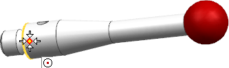
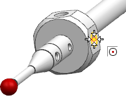
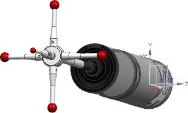

In this activity, you will assemble the styli to the hub, using a procedure similar to that you used to assemble the axial components.
Assemble each of the four styli by doing the following.
In the Move Component dialog box, click Select Components.
In the graphics window or the Assembly Navigator, select the component to be assembled.
In the Transform group, from the Motion list, choose Point to Point.
With the Specify From Point row selected, in the graphics window, select the stylus center point at the location where it will attach to the hub.

With the Specify To Point row selected, in the graphics window, select the hub center point where the stylus is to be assembled.

As each of the first three styli are assembled correctly, click Apply. When the last stylus is assembled correctly, click OK to close the Move Component dialog box, and then click Cancel to close the Add Component dialog box.
The styli should now be correctly attached to the hub.

|
Note |
The small holes at the base of the styli do not have to match those in the graphic above. |